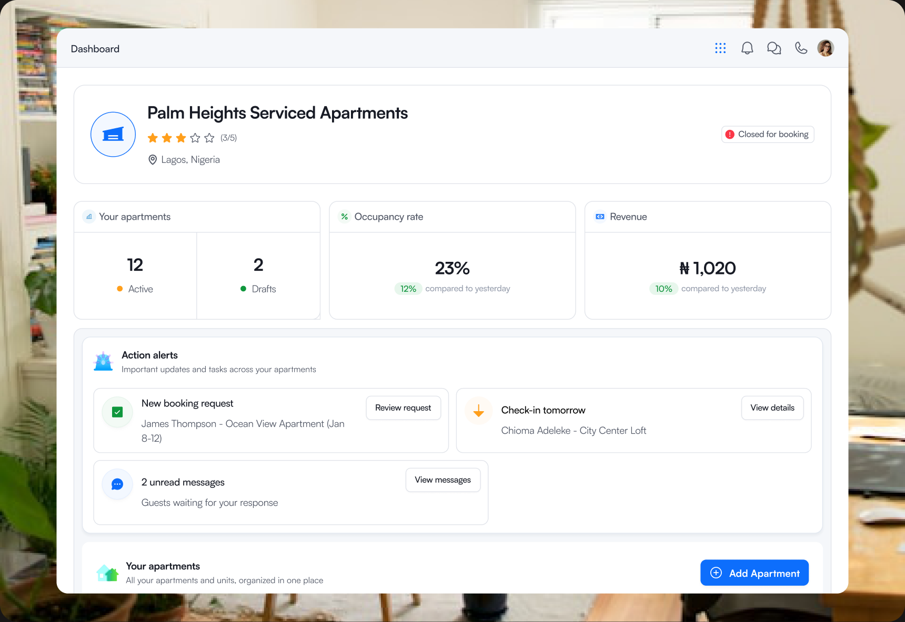
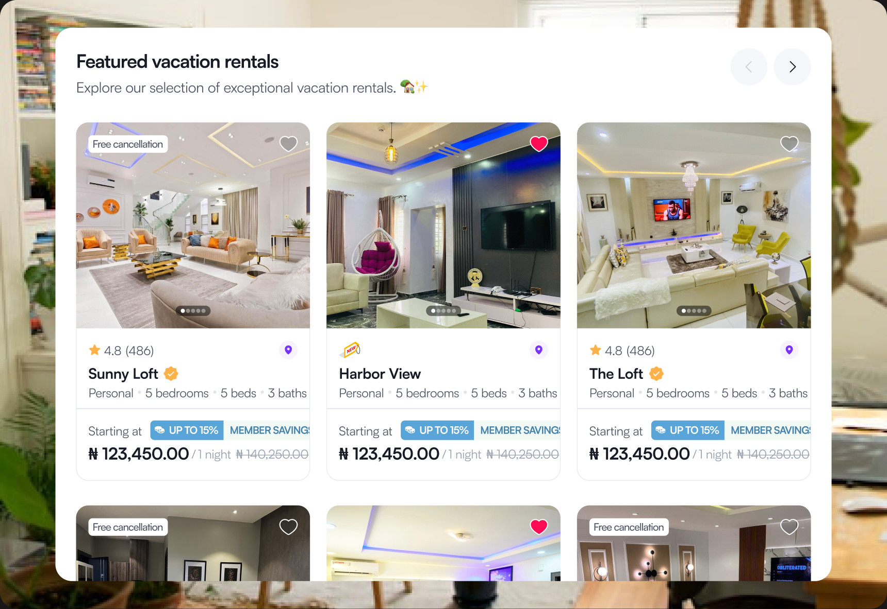
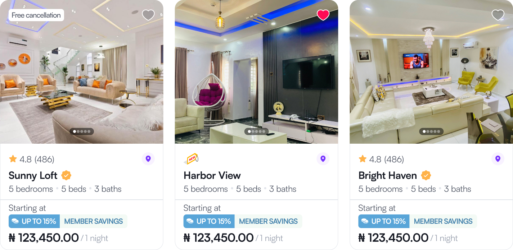
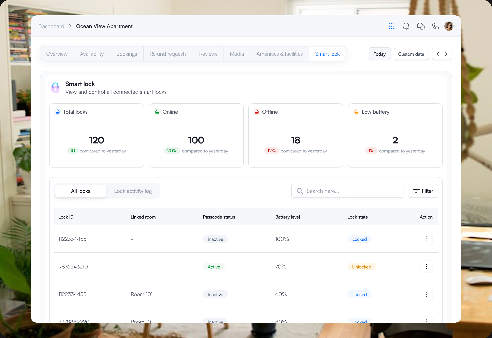
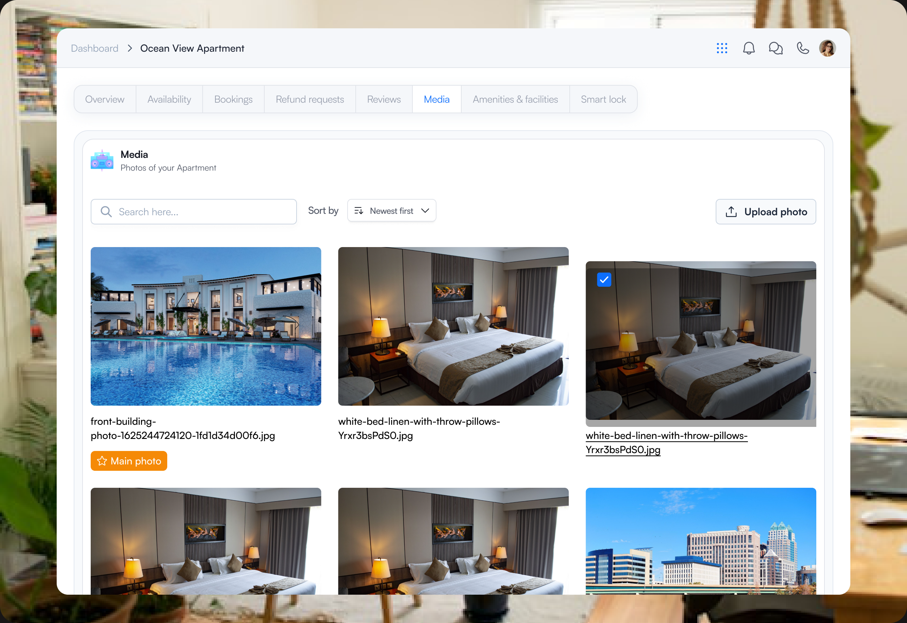
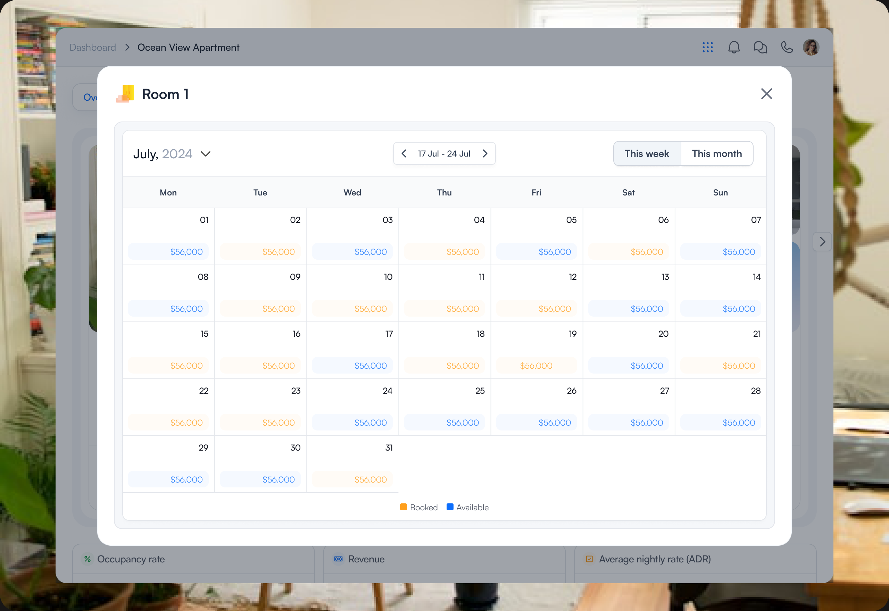
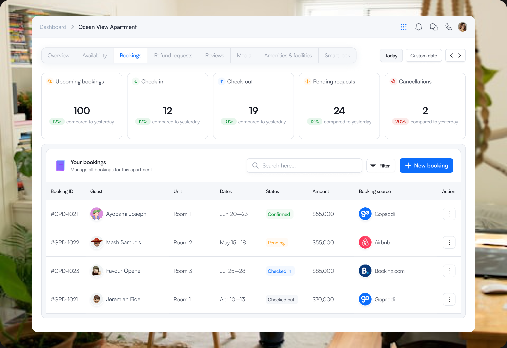
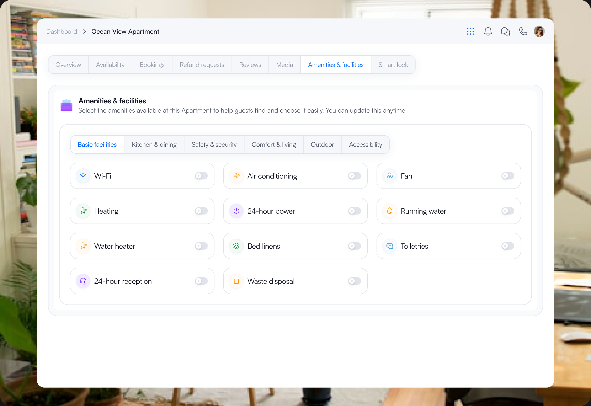
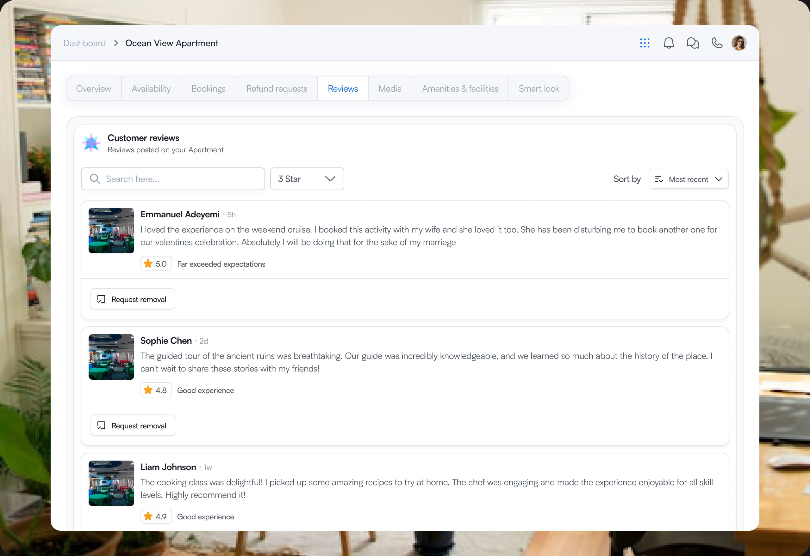
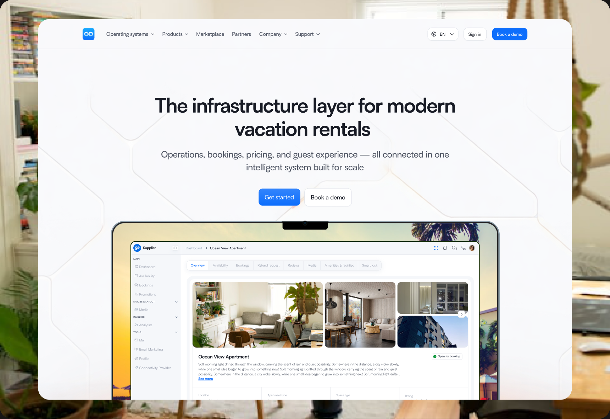

Vacation Rentals
One property. Two sides of the experience. One connected system.
A traveller just wants to find a great place and book it.
A supplier has an entirely different job: create the property, manage it, keep its information accurate, handle bookings, run operations and deliver a good stay.
I designed Gopaddi Vacation Rentals to connect both sides.
Suppliers could manage their vacation rentals from their own workspace while making those properties available to travellers through the Gopaddi Marketplace.


- COMPANY
- Gopaddi Technologies
- ROLE
- Product Designer
- MY CONTRIBUTION
- Product Thinking · UX/UI Design · Systems Design · Prototyping
01 — I started with the gap between both sides.
The marketplace was only half the story.
Making vacation rentals available on Gopaddi wasn't simply a matter of creating property cards and a booking flow.
For every property a traveller discovers, someone has to manage everything behind it.
Property information.
Availability.
Bookings.
Operations.
Guests.
Performance.
If the supplier experience and marketplace experience were designed separately, we'd simply be creating another fragmented system.
So the problem I focused on became:
How do we connect the place where suppliers run their vacation rentals with the place where travellers discover and book them?
That became the foundation of the product.
02 — I designed the lifecycle, not just the screens.
Before getting deep into UI, I mapped what needed to happen from both perspectives.
On one side...
Supplier creates property → Manages rental → Publishes inventory
On the other...
Traveller discovers property → Books → Stays
And behind both:
Bookings → Operations → Guest experience → Performance
The important insight was that these weren't separate journeys.
They were two sides of the same system.
That changed how I approached the design.
Instead of asking “What screens does Vacation Rentals need?”, I started asking:
What information is created here? Where does it appear next? What changes when a booking happens? And who needs to know?
That helped turn a large feature set into a connected product.
03 — Then came the difficult part: hiding the complexity.
Vacation Rentals needed to do a lot.
But showing everything the system could do would only transfer its complexity to the user.
So I designed around progressive context.
At the highest level, suppliers needed to understand their business.
At property level, they needed to manage an individual rental.
And when something required attention, the interface needed to bring the relevant information and action closer.
Portfolio → Property → Action
That hierarchy helped me decide what deserved prominence and what could wait until the user needed it.
It also gave the product room to grow without making every screen compete for attention.

04 — The breakthrough was connecting management to distribution.
This became one of the most important relationships in the product.
A supplier doesn't manage a vacation rental just for it to exist inside a dashboard.
They want people to book it.
So the supplier experience connects directly to the Gopaddi Marketplace.
Properties created and managed from the supplier side can be listed on the marketplace, where travellers can discover and book them.
Manage here → Sell there.
The marketplace isn't a separate destination the supplier has to maintain manually. It becomes the customer-facing side of the same ecosystem.
That connection turned Vacation Rentals from a management feature into something more valuable:
A system that helps suppliers operate their rentals and bring them to market.


05 — And a booking wasn't where the product stopped.
Getting the reservation was only one moment in the lifecycle.
The system also had to support what happens around the stay—from property operations and guest communication to digital access and understanding business performance.
This meant thinking beyond individual transactions.
Manage → Distribute → Book → Operate → Host → Learn
Each stage creates information the next stage depends on.
Designing those relationships was just as important as designing the interfaces themselves.

06 — The final experience
One ecosystem, seen differently depending on who you are.
For suppliers, Vacation Rentals became a central place to manage properties, operations, bookings, distribution, guests and performance.
For travellers, all of that operational complexity disappears behind a much simpler experience: discover a vacation rental on the marketplace, understand what it offers and book it.
That contrast was intentional.
The supplier needed control.
The traveller needed simplicity.
The system had to provide both.





07 — One product. A different story outside it.
There was one final design problem:
How do you sell something this complex without explaining everything it does?
For the Vacation Rentals landing page, I deliberately moved away from the operational density of the product.
The message became much simpler:
Run your vacation rental business from one connected system.
And visually, I allowed the experience to become more expressive.
This was where I introduced pink alongside the existing brand language—not as a redesign of the product, but as a way to give the marketing experience more warmth, energy and personality.
The product needed to help people operate.
The landing page needed to make them care.
View landing page
The takeaway
The best thing I designed wasn't a screen. It was the connection between them.
Vacation Rentals reinforced the kind of product designer I want my work to communicate.
I enjoy products where the difficulty isn't making a beautiful interface.
It's figuring out how roles, data, actions and different parts of a business should work together—and then making that complexity almost invisible to the person using it.
With Vacation Rentals, that meant connecting the entire journey:
Supplier → Property → Marketplace → Traveller → Booking → Stay
One system behind it all.